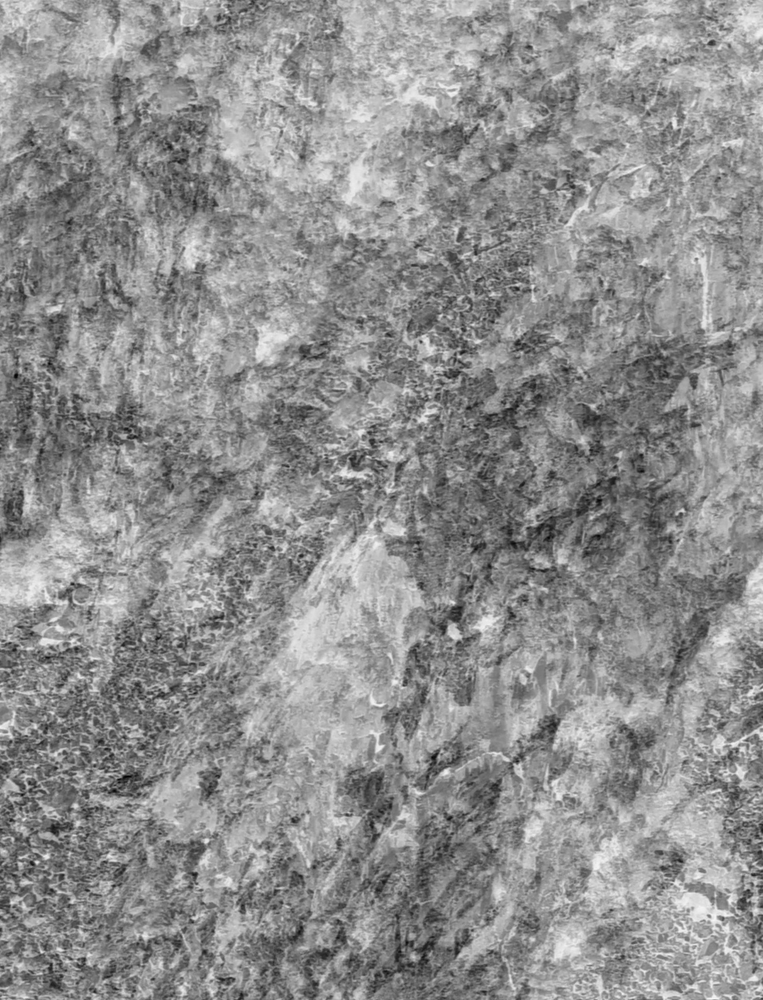

Cartography of the Terraces (socalcos) in Galicia (Northwest Spain): An Original Approach
The Journal of Terraced Landscapes volume 1, issue 1, pp. 8–33 (2020) · Cite this article
- 317 views
- 293 downloads
- DOI10.5281/zenodo.5896822

Abstract
The aim of this study was to understand the distribution of terraces in Galicia. First, a detailed cartography was created based on GIS tools. For this purpose, a digital model with a resolution of 2 m was used, together with orthophotos with a resolution of 0.25 m and several vector files containing information about geological and climatic features and settlements. From this analysis, we were able to determine that the terraces occupy an area of 30,255.56 ha and are found on a wide range of rock types and slopes. In addition, we analysed the former land use using aerial photographs of the historic American flight (1956) and topographic maps from the 1940s. On the other hand, field surveys combined with recent orthophotos and information from SIOSE allowed us to determine current terrace use. A progressive abandonment of cultivation and an active process of recolonisation by vegetation or urbanisation - depending on the sector - can be observed. As for the study area, we have carried out an analysis for entire region of Galicia and a more detailed analysis for the terraces in the Miño Sil basin.
Keywords
- Terraces
- Galicia
- Cartography
- GIS
1. Introduction
The need for crop land has led to slope restructuring in many areas around the world (Ažman Momirski, L. et al., 2008; Bevan, A., & Conolly, J., 2011; Tarolli, P. et al., 2014, 2015; Gadot, Y., et al., 2016; Špulerová, J., et al., 2017; Varotto, M. et al, 2018; Tillmann, T., & Salas, M., 2018). Within the Iberian Peninsula, terraces are widely found in Mediterranean regions (Asins Velis, S. &González, J. R., 2010; Lasanta Martínez, T. et al., 2010; Gimenez-Font, P., 2018; Garau, G. A. et al., 2020.), but also in the Canary Islands (Romero Martín, L. et al. 2003; Romero Martin, L. E et al, 2016) and in Northern Atlantic coastal regions such as Portugal (Pereira, S., 2020) and Galicia (Pérez-Alberti, A., 2019).
Galicia is located in the northwest of Spain and occupies an area of 29,574 km², which is the study territory for this paper (Figure 1A). This area is characterised by contrasting topography (Figure 1B) and lithology. In terms of lithology, trending succession of different materials can be observed from west to east, consisting mainly of igneous rocks, metamorphic rocks and to a lesser extent sedimentary rocks (Figure 1C). On the Atlantic side, granitic rocks dominate. In the central regions, mafic and ultramafic rocks (peridotites, eclogites and gabbros) are found in its north part, schists in the central area and granites again in the south part. In the east areas, on the other hand, schists, quartzites, limestones and dolomites alternate with small granitic intrusions. This distinction explains some of the characteristics of the terraces, especially their constructive elements and the original soils, since the construction of the terraces actually meant a change in the existing soil layer, which shifted from its original natural dynamic to another determined by human activity.
Distance from the sea and altitude differences affect orientation and slopes (Figure 2A) and influence rainfall (Figure 2B) and temperatures (Figure 2C). Climatically, warm and humid conditions prevail, with large differences between coastal and inland areas, and differences in altitude between the lowlands and the eastern mountains, some of which are over 2,000 m high, as in the case of the Trevinca massif (2,125 m). Relief plays an important role in climate variability. While precipitation in some coastal areas exceeds 2,000 mm, in some eastern areas it barely reaches 600 mm (Martínez Cortizas & Pérez Alberti, 1999). In terms of temperatures, the average in coastal areas is from 13 to14 ºC, with the lowest in January (9 ºC) and the highest in August (18 ºC). In the southeast, on the other hand, the average temperature is over 14 ºC, with very cold winters and warm summers defining a temperature range of 15 ºC, as opposed to a range of 9 ºC in the coastal areas (Pérez Alberti, 1986).


The presence of terraces is essentially due to the presence of a relief composed of a succession of flat areas with exceptionally low slopes, interrupted by numerous river valleys with very different degrees of inclination in the different sectors, as this is accurately reflected in the slope map (Figure 2A). All this is the result of the geotectonic evolution in the northwest of the Iberian Peninsula, characterised by intense precursory processes that began in the Neogene in conjunction with the Alpine orogeny. At that time, the relief was largely horizontal, the climate warm and humid, and there was an extensive river network that was later modified by tectonic dynamics (Pérez Alberti, A., 1991; 1993). Intraplate movements associated with slip faults led to uplift and subduction events that altered the existing river network and resulted in the formation of deep river canyons. These processes resulted in a very different landscape from the present one, characterised by numerous valleys, many of which form deep canyons both in coastal areas and inland, such as those of the Eume, Ulla, Tambre, Miño or Sil rivers.
This dichotomy between the remaining horizontally flattened areas at different altitudes from the coast to the east mountain ranges and the steeper slopes of the valleys led to different land use. The differences go far back in history, as evidenced by the close relationship observed in many places between the hill forts located on the slopes, known in Galicia as bocarribeiras, and the stepped terraces below. This fact, noted during the mapping of the terraces, could be taken into account in future studies, as it requires a specialist opinion.
Therefore, in order to understand the spatial distribution of the terraces in Galicia, it is necessary to consider the dynamic interactions between slope, rock type and degree of alteration and climatic variables such as temperature and precipitation, as well as orientation, a factor that is of greater importance in the coastal areas with higher humidity than in the south-eastern areas, where humidity is lower and occasionally reaches drought levels (Díaz-Fierros, 1971).


De Sande Lemos (2008) mentions the existence of terraces associated with hill forts in northern Portugal. Caamaño (2017) dates the origin of the terraces to the time of Roman domination, but considers that their development reached its peak in the 14th and 15th centuries, when viticulture, wine production and trade were at their peak. This origin seems to be supported by the presence of hillforts in the valleys in numerous places. Hillforts are fortified settlements that generally predate the Roman period. Among them are usually terraces, as shown in Figure 3. During the mapping of the terraces we were able to locate 160 hillforts on the terrace slopes. This fact is very important for the interpretation of the origin of the first terraces in Galicia, but in order to deepen the knowledge of their concrete construction date, new studies are needed that go beyond the objectives of this work and could be carried out by specialists.
The importance of terraces in Galicia was first highlighted in a doctoral thesis by the French geographer Abel Bouhier in 1979. The author presented a cartography showing vast areas of terraced crops (see Figure 5 below). As these were only mapped on a small scale, it is impossible to determine their exact location within the territory and the area they cover. Bouhier distinguishes between the terraces in the northwest, in As Mariñas and in the southwest on the one hand, and the vineyards and terraces in the Miño and Sil valleys on the other. Apart from this study, there are very few works that deal with terraces more than marginally. These include a study by Seara Morales (1981), carried out from an architectural point of view, and the studies by Caamaño (2017) and Pérez Alberti et al. (2014), which focused on landscape typology and in which terraces were placed in the category of transformed slope landscapes, characterised by the complete alteration of the original slope profile. In 2018, Pérez Alberti analysed landscape dynamics in the Ribeira Sacra, where terraces are considered key elements; recently, Pérez Alberti (2019) published a monograph on terraced landscapes in the Ribeira Sacra (Chantada and Monforte area). In this monograph, the terraces were mapped at a detailed scale. Therefore, this article presents the results of a study that can be considered the first cartographic study of terraces in Galicia at a global scale, using Geographic Information Systems (GIS) as a working tool.


2. Objectives, Materials and Methodology
The main objective of this study is to map the areas occupied by terraces at a detailed scale. For this purpose, two digital models (DM) with a resolution of 2 m based on LiDAR (Light Detection and Ranging) data (Instituto do Territorio (IdT), Xunta de Galicia) were generated: a digital surface model (DSM) and a digital terrain model (DTM). In addition, a 5 m DTM was created from Instituto Geográfico Nacional (IGN) data to better understand certain aspects of the relief, such as slopes. Shadow maps were then created. PNOA ortophotos (IGN) with a resolution of 25 cm, population data (Xunta de Galicia), settlements (Xunta de Galicia), rivers (IGN) and geological maps (Instituto Geológico y Minero de España, IGME), the 2011 SIOSE (Sistema de Información sobre Ocupación del Suelo de España) geographic information system (IGN) and the 2011 forest map (Spanish Ministry of Ecological Transition and Demographic Challenge) were overlaid on them.
With all this information, a GIS was created using ArcGIS 10.7 software (USC licence). First, the digital models with a resolution of 2 m were loaded, and all terrace sections were mapped at a scale of 1:4000; in the areas with particularly small terraces, the scale was extended to 1:500. As can be seen from Figure 3, mapping terraces at any scale with a 10 m or 5 m DGM is difficult. In the case of 2 m models, the DSM (i.e. a model containing all the natural and anthropogenic elements of the terrain) has proven to be the one that allows the best visibility, as the possibility to view and map terraces decreases when only the terrain surface is considered. Finally, overlaying PNOA images with the shadow map allowed us to observe the use of the different terraces (Figure 4). However, due to the size of the study area, it has not been possible to produce such detailed cartography. It should be noted that the land in Galicia is highly divided, due both to the fragmented relief itself and to the prevailing inheritance system, which in many areas leads to an equal division of land ownership among the different heirs, resulting in a large number of used and unused plots.
For this reason, the SIOSE 2011 was used to estimate the use of the terraces. Nevertheless, the fact that this land use database for the entire territory at the cartographic reference scale of 1:25,000 divides the territory into a series of polygons, each of which has one or more coverage levels with the corresponding percentage occupations and attributes, was considered. This fact does not allow a reality like that of the terraces to be determined precisely, as they usually occupy small sections, but it does allow a preliminary overview that can serve as an orientation. Only the polygons occupied 100% by a single type of occupation could accurately reflect the land use, but this is prevented by the scale of the analysis. The same is true for the geological mapping, whose scale (1:50,000) does not adapt to the size of the plots represented, but which provides information on the structural context of each sector, which is essential for understanding the built-up elements and preexisting ground conditions. Conversely, the scale used for mapping, together with the overlaying of layers, has made it possible to establish the existence of terraces after most of them had to be laboriously searched for and delineated.
Registering terraces in a detail scale all mapped sectors escape the format and extension of this paper. Nevertheless, we thought it useful to show the results of a larger number of sectors at different scales of representation: a smaller scale with a 20 km grid and a slightly more detailed scale with a 10 km grid centred on the Miño Sil basin. In the first example, we have only delineated the terraces within the Bouhier division, without analysing their past and present use, while in the second example we have added the current land use of these sectors.
3. Results
This section includes the identification of terraces in the Galician context and the analysis of the sectors where detailed mapping is possible.
3.1. Global distribution of terraces in Galicia
The mapping of these terraces - known in Galicia as socalcos, among others - has shown that they are distributed over many areas of Galicia and occupy a total area of 30,255.74 ha. In the coastal areas, they are mainly found on the north coast around the cities of A Coruña and Ferrol - a stretch of coast known as the Gulf of Artabro - and on the lower reaches of rivers. Inland, they are found in the Miño catchment area between the coast and the Chantada area, and in other valleys of the same catchment area.
The differences between the cartography of Bouhier (1979) and the maps shown in this paper are very large, as can be seen in Figure 5. Bouhier did his work using aerial photographs from 1956 (scale 1:33,000) and only indicated the large areas where there were sectors with terraces. In this case, we have mapped all the terraces in each zone. Terraces are found in areas with different degrees of slope (Figure 2A). The slopes were classified into six types: 1) slopes with a degree of inclination from 0 to 4º, 2) from 4º to 8º, 3) from 8º to 16º, 4) from 16º to 32º, 5) from 32º to 64º and 6) above 64º. The data shows that 29.34% of the terraces are located on slopes with an inclination of more than 16º, while others were built on slopes with more than 32º or even more than 64º, especially in the deep gorges of the Miño and Sil rivers, which we will discuss in more detail later (Table 1).
The geological map (Figure 1C) shows that of the total area of terraces in Galicia, 9,799.82 ha are on metamorphic material, 26,062.18 ha on granitic terrain, 751 ha on mafic and ultramafic rocks, 50.59 ha on carbonate rocks, 2,957.47 ha on Quaternary deposits, 399.90 ha on Tertiary deposits and 6.89 ha on polyquaternary material.
The analysis of the SIOSE showed that some of the terraces are still cultivated, while others have been abandoned and subsequently colonised by vegetation or occupied by tree crops or even buildings, as shown in Table 2. It should be noted that in Galicia the areas originally covered with shrubs (monte), i.e. with bushes or trees used as fertiliser in the case of shrubs or as building material and firewood in the case of trees, were considered unsuitable for arable farming, while the terraces were intended for arable farming or pasture. Since the 1950s, the abandonment of rural areas led to their natural regrowth by forests, the planting of fast-growing species such as eucalyptus or spreading of urban settlements.


This evolution is confirmed by memories of inhabitants over 70 years old and, in particular, to avoid any subjectivity, by the analysis of topographic maps from the 1940s and images from the 1956 American flight, all of which show that a large part of the terraces was occupied by vegetable and cereal crops, pastures and vineyards. However, the current uses show that a significant part of the terraces is covered with tree and shrub species that naturally occupy the space that once belonged to them, as in the case of deciduous trees and shrubs that are in an early stage of expansion.
No studies were found that specifically address the flora or fauna of the terraces. However, it is worth noting that some terraces are located within areas of natural interest or even protected areas. For example, taking into account the fact that different protection designations overlap spatially, making it impossible to calculate a total area, 10.09 ha are located in natural parks, 1332.09 ha in Sites of Community Importance (SIC), 305.73 ha in Special Protection Areas for Wild Birds (SPA), 1504.60 ha in Special Protection Areas for Natural Values (ZEPVN) and 3 249.31 ha in Biosphere Reserves.
3.2. Local analysis of the terraces of the Miño-Sil basin
At this point in the study (and with the goal of defining the exact location, construction features and current land use of the Galician terraces) after the initial mapping of the entire Galicia region, the scale was expanded to present the results for the Miño-Sil basin, with a total area of 17,000 km2, of which 12,101 km2 belong to the Galicia region. The aim was to take a closer look at these terraces by producing higher resolution images, an approach which, if applied to the entire region, would exceed the scope of a single publication. The results for the other river basins in Galicia will therefore be published in future studies.

The Miño-Sil river basin reflects the contrasts already mentioned in the introduction: flattened areas interrupted by rivers that form deep gorges for much of their course (Figure 6). The main river rises in the foothills of the Serra de Meira and covers a distance of 350 km before flowing into the Atlantic. Its tributary, the Sil, stretches 228 km between the Cantabrian Mountains and its confluence with the Miño.
The presence of deep gorges with steep banks throughout the river system posed a challenge for the establishment of cultivated areas, but did not prevent massive topographic transformation from taking place. Where the steep slopes were dominated by boulders, terrace construction was particularly difficult, but not impossible, as evidenced by the presence of boulders in certain places in the Sil Valley (Figure 7), where periglacial activity produced rock deposits, some of which were used to build stone walls for terraces. However, the sunlit slopes, on which a weathering layer was already present, were intensively reshaped to make them suitable for vine cultivation, in sections dominated by both granitic and metamorphic rocks, as in the areas of Monforte de Lemos, Chantada and Ribadavia. The total area of the terraces created in the Miño-Sil river basin is 18,856.68 ha. The reasons for building the terraces were either the need to create additional cultivable land, as is the case with vineyards, or to smooth out the steep slopes to facilitate agricultural work. The construction of terraces in Galicia involved an enormous effort that proves the role of men and women in shaping the relief, as it involved the modification of numerous slopes, the reshaping of the river system and the creation of anthropogenic soils in many places, transforming the original natural dynamic into a new one determined by man. Possibly the Ribeira Sacra to the east of Chantada and to the south of Monforte de Lemos is the area in Galicia where the terraces form the most unique landscape (Figure 7).


It is worth noting that numerous names are used for the terraces and their dry stone walls. In O Ribeiro (Ribadavia area) they are known as sucalcos. In the Ribeira Sacra, their designation varies from place to place. In Saviñao and Chantada they are called muras, in A Teixeira paredes, in Sober and Parada do Sil muros, in Ribas de Sil paredós and in Pantón and Nogueira de Ramuín calzadas. In Chantada, the houses with large walls are called poxadas, and the largest of them is called patal. Therefore, there are many names: sucalcos or socalcos, pataos, pataus or patais, muras or muros, liños, bancadas, bancais, paredós, calzadas or poxadas. This is a perfect example of the importance of these elements in the Galician context.
Generally, terracing consisted of first building a wall along the lower boundary of a particular section of the slope, thus creating a cavity which was then filled with soil obtained by “breaking up” the weathered layer of rock and mixing it with plant material, manure or both. For this purpose, a channel or trench was opened between two rows of vines and filled with heather, gorse or cut vine branches. This promoted the emergence of “anthropic” soils in the sense that their dynamics were determined by the human contribution of organic material rather than by natural dynamics. It should be remembered that soils are sediments that develop naturally through the input of organic matter. In this case, these contributions were promoted by farmers and agricultural activity.


The width of the terraces varies from one area to another depending on the slope and relief. On steeper slopes, terraces are usually very narrow and only allow the cultivation of one or two rows of vines, while on lower slopes wider terraces are possible, but never wide enough for more than a few rows of vines (Figure 9).
On the other hand, the rock properties, such as the degree of fragmentation and weathering, also determined the size and design of the terraces. Easily fragile metamorphic rocks allowed the construction of dry stone walls by piling up the stones without sealing elements and only placing small wedges where the stones needed additional support. Reversed, in the granite-dominated areas small walls of well-worked stone blocks exist next to accumulations of barely worked stones (Figure 10).
Complementing the terracing, a complex access system had to be created, which also varied depending on the slope. In some areas, paths were created directly along the upper or lower sections of the plots. In other areas, access was provided by stairs embedded in the walls. There is a wide range of designs in both the access systems and the general layout of the terraces. For example, in some areas the terraces run continuously parallel to the shore, while in others they are short and interrupted by large boulders that were difficult to remove.
The succession of terraces from bottom to top (bocarribeira) results in a fully anthropised landscape, reinforced by the construction of small huts inside the terraces used to store tools or as shelters for resting, although many of them have more recently been converted into temporary or even permanent dwellings. The terraces, once created for vegetable and wine cultivation, lost its function since the fifties of the 20th century. This loss was accelerated by strong migratory movements. A large part of the population of Galicia and the Miño basin migrated to various European countries, especially Germany, France, the Netherlands and Switzerland. In contrast to the migratory movements to the Americas - especially to Argentina and Uruguay, but also to Brazil and Venezuela - which took place in the 19th and early 20th centuries and affected a smaller number of people, migration to Europe was of a much larger scale.


On the other hand, the construction of dams on the Miño and Sil rivers in the early 1950s led to the flooding of some terraces and villages, resulting in further population movements. This is made clear by analysing aerial photographs from the 1956 American flight. They show that some terraced areas around the reservoirs, which were designated as farmland in the 1940s IGN topographic maps, were already in an early stage of vegetation overgrowth. This is the case with some vineyards in the Ribeira Sacra (Pérez Alberti, 2019). Therefore, many terraces are currently covered by scrub, woods, planted trees or even buildings. Table 3 summarises the current terrace land uses according to SIOSE.
Although further studies are needed to consolidate these data, it is evident that of the 18,856.68 ha, only 9,199.56 ha (i.e. 48.78%) are still used for agriculture; 123.20 ha (0.65%) are occupied by tree crops, indicating a first phase of abandonment and overgrowth by plants, and 1. 427.76 ha (7.57%) are covered by a mosaic of agricultural and urban land, indicating recent population expansion towards the terraced areas. Similarly, many terraces are currently covered with shrub and tree species, totalling 4,970.17 ha (26.35%), while conifers (in this case corresponding to forest plantations) occupy 2.89% of the terrace area.


The data on the terraces in the Miño-Sil basin, taken from the Forest Map (2011), show the presence of different species, both native and introduced: Acacia dealbata, Alnus glutinosa, Arbutus unedus, Betula alba, Castanea sativa, Eucalyptus glóbulos, Eucalyptus nitens, Eucalyptus viminalis, Fraxinus excelsior, Pinus pinaster, Pinus radiata, Pinus sylvestris, Platanus hispánica, Populos canadensis, Quercus ilex, Quercus pirenaica, Quercus robur, Quercus rubra, Quercus suber, Salix atrocinerea and Salix fragilix, as well as a wide range of shrub and bush species.
Among the introduced species, Acacia dealbata and Eucalyptus spp. are noteworthy. Acacia dealbata and Eucalyptus spp. are both native to Australia and were planted in wine-growing areas to use their wood as stakes for vineyards. Later, the switch from wooden stakes to stone or concrete stakes and wires resulted in these trees, which were no longer cut down, becoming a serious environmental problem as they have become an invasive, gradually spreading species. Similarly, Eucalyptus spp. spreads naturally in the humid environment without human intervention. Pinus spp. is also associated with forest plantations. Reversed, native species such as Quercus spp. have emerged through spontaneous expansion, a process that can be clearly observed in the Ribeira Sacra.
4. Conclusions
The terraces (socalcos) are of great importance in Galicia, not only because of the large area they cover (about thirty thousand hectares), but also because they were built in unique places, especially in the valleys of the Miño and Sil rivers. Their origins date back to pre-Roman times, although their construction continued until the first half of the twentieth century. Their construction continued until the end of the nineteenth century. They were built both in the coastal areas and in the interior of Galicia to create cultivation areas, especially in areas with a slope of more than 64º, as is the case with the terrace constructions in the Ribeira Sacra intended for vineyards.


Besides vines, vegetables and even cereals were grown on the terraces. However, the abandonment of the countryside and urban development led either to the regrowth by natural plants and the planting of forests or to the expansion of urban development. Terraces represent unique and very valuable landscapes from both a cultural and natural point of view, hosting not only interesting plant species but also a variety of bird species.
References
- Asins Velis, S. (2006) Linking historical Mediterranean terraces with water catchment, harvesting and distribution structures, The Archaeology of crop fields and gardens. Bari: Edipuglia, pp. 21–40.
- Asins Velis, S. A.; González, J. R. (2010) Management, planning and protection of terr aced hillsides in the Region of Valencia, Investigaciones Geográficas 53, 85–98.
- Ažman Momirski, L.; Berčič, T.; Mongus, D.; Žlaus, D. (2018) Inventorying terraced landscapes in Slovenia: Territorial levels and survey methods. EGUGA, 12974.
- Bevan, A.; Conolly, J. (2011) Terraced fields and Mediterranean landscape structure: an analytical case study from Antikythera, Greece, Ecological Modelling 222 (7), 1303–1314.
- Bouhier, A. (1979) La Galice: essai géographique d’analyse et d’interprétation d’un vieux complexe agraire. Thése de Doctorat d’État. La Roche-sur-Yon: Imprimerie Yonnaise.
- Caamaño Suárez, M. (2017) Construcións populares das serras ourensás, Raigame: revista de arte, cultura e tradicións populares 41, 86–101.
- Díaz-Fierros Viqueira, F. (1971) Contribución a la climatología agrícola de Galicia (Vol. 8). Secretariado de Publicaciones de la Universidad de Santiago.
- Gadot, Y.; Davidovich, U.; Avni, G.; Avni, Y.; Piasetzky, M.; Faershtein, G.; Golan, D.; Porat, N. (2016) The formation of a Mediterranean terraced landscape: Mount Eitan, Judean Highlands, Israel, Journal of Archaeological Science: Reports 6, 397–417.
- Garau, G. A.; Gelabert, M. G.; Llinàs, J. B. (2020) Determinación cartográfica de los muros de piedra seca de la Sierra de Tramuntana mallorquina (Islas Baleares): Análisis exploratorio, Cuadernos geográficos de la Universidad de Granada 59(3), 142–157.
- Gimenez-Font, P. (2018) El paisaje de terrazas de La Marina valenciana, in Paisajes patrimoniales de España (tomo II). Madrid: Ministerio de Agricultura, Pesca y Alimentación-Ministerio para la Transición Ecolgica. Madrid, pp. 510–527. Huetz de Lemps, A. (1967) Vignobles et vins du Nord-Ouest de l’Espagne (Vol I-II). Bordeaux: Institut de Géographie. Faculté des Lettres. Lasanta Martínez, T.; Arnáez Vadillo, J.; Ruíz Flaño, P.; Ortigosa Izquierdo, L. (2010) Los bancales en la montaña mediterránea. Un paisaje multifuncional en proceso de degradación. In Territorio, paisaje y patrimonio rural: Actas del XV Coloquio de Geografía Rural. Cáceres: Servicio de Publicaciones. Martínez Cortizas, A.; Pérez Alberti, A. (eds) (1999) Atlas climático de Galicia. Santiago de Compostela: Xunta de Galicia. Petanidou, T.; Kizos, T.; Soulakellis, N. (2008) Socioeconomic dimensions of changes in the agricultural landscape of the Mediterranean basin: a case study of the abandonment of cultivation terraces on Nisyros Island, Greece, Environmental Management 41 (2), pp. 250–266. Pereira, S. (2020) The Terraced Slopes of the Douro Valley. In Landscapes and Landforms of Portugal, pp. 151–162. Cham: Springer. Pérez-Alberti, A. (1982) Climatoloxía, in Xeografía de Galicia. Tomo I: O Medio, pp. 71–108.Santiago de Compostela: Editorial Sávora. Pérez-Alberti, A. (1991) La geomorfología de la Galicia sudoriental: problemas geomorfológicos de un macizo hercínico de la fachada atlántica ibérica. Centro sudoeste de Galicia. Thesis. Universidad de Santiago de Compostela: Facultad de Geografía e Historia. Pérez-Alberti, A. (1993) La interacción entre procesos geomorfológicos en la génesis del relieve del SE de Galicia: el ejemplo del Macizo de Manzaneda y de la Depresión de Maceda, in La evolución del paisaje en las montañas del entorno de los Caminos jacobeos, pp. 1–24. Santiago de Compostela: Consellería de Cultura de la Xunta de Galicia. Pérez-Alberti, A. (2018) Dynamic assesment of landscapes of the Ribeira Sacra, in A future for the land: cultural landscapes, rural management and geographical information systems, pp. 108–125. Expert Workshop Ribeira Sacra, November 2018. Pérez-Alberti, A. (2019) La Ribeira Sacra. Paisajes de Terrazas. Grupo de Desenvolvemento Rural Ribeira Sacra-Courel. Pérez-Alberti, A.; Borobio-Sanchiz, M.; Castillo-Rodríguez, F.; Payán-Pérez, M. (2014) Metodología y clasificación de tipos de paisaje en Galicia, GOT, Revista de Geografia e Ordenamento do Território 6, pp. 259–282. Romero Martín, L. E.; Ruíz Flaño, P.; Hernández Calvento, L. (2003) El espacio de bancales en el tramo inferior de la cuenca del Guiniguada: características ecoantrópicas y estado actual Vegueta: Anuario de la Facultad de Geografía e Historia. Romero Martin, L. E.; Gonzalez Morales, A.; Ramon Ojeda, A. (2016) Towards a new valuation of cultural terraced landscapes: The heritage of terraces in the Canary Islands (Spain), ANNALES Series Historia et Sociologia 26(3), pp. 499–512. de Sande Lemos, F. (2009) A cultura castrexa no Minho, in Minho: Traços de Identidade, pp. 122–213. Universidade do Minho. Seara Morales, S. (1981) Aproximación a arquitectura da terra do viño: os socalcos e as adegas, Obradoiro: revista de arquitectura y urbanismo 7, pp. 62–74. Špulerová, J.; Dobrovodská, M.; Štefunková, D.; Kenderessy, P.; Izsóff, M. (2017) Terraced landscapes in Slovakia, Acta geographica Slovenica 57(2), pp. 99–109. Tarolli, P.; Preti, F.; Romano, N. (2014) Terraced landscapes: From an old best practice to a potential hazard for soil degradation due to land abandonment, Anthropocene 6, pp. 10–25. Tarolli, P.; Sofia, G.; Calligaro, S.; Prosdocimi, M.; Preti, F.; Dalla Fontana, G. (2015) Vineyards in terraced landscapes: new opportunities from lidar data, Land Degradation & Development 26(1), pp. 92–102. Tillmann, T.; Salas, M. (2018) Participatory action research: visualizing terraced landscapes from Asia, Europe and Latin America. ANNALES Series Historia et Sociologia 28(4), pp. 693–78. Varotto, M.; Bonardi, L.; Tarolli, P. (Eds.). (2019) World Terraced Landscapes: History, environment, quality of life. Cham, Switzerland: Springer Nature.
Rights and permissions
Open Access. This article is licensed under a Creative Commons CC BY 4.0 license, which permits use, sharing, adaptation, distribution and reproduction in any medium or format, as long as you give appropriate credit to the original author(s) and the source and indicate if changes were made.
About this article
Cite this article
Pérez Alberti, A. (2020). Cartography of the Terraces (socalcos) in Galicia (Northwest Spain): An Original Approach. The Journal of Terraced Landscapes, 1(1), 8–33. https://doi.org/10.5281/zenodo.5896822
- Published
- October 2020
- Issue
- Volume 1, Number 1
- Journal
- The Journal of Terraced Landscapes, ISSN 2754-7612 (Online)
- Archive
- Zenodo record 5896822
- Terraces
- Galicia
- Cartography
- GIS